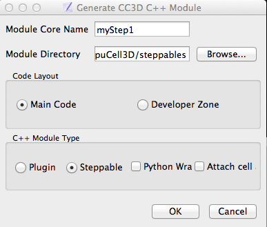
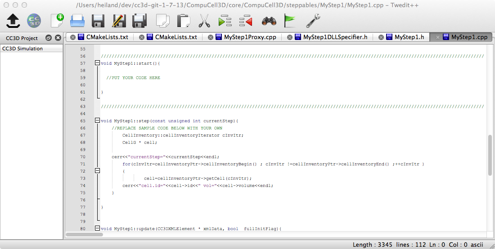

We recommend using Twedit++ (accessible from the File menu or an icon at the top of the Player) to create a custom steppable (or plugin). After Twedit++ starts, use the "CC3D C++" menu to "Generate New Module".

and specify the "Module Directory" to be in your source code CC3D steppables subdirectory, e.g.:
/Users/heiland/dev/cc3d-git-1-7-13/CompuCell3D/core/CompuCell3D/steppables
Notice that Twedit also modifies/inserts our custom steppable subdir into the "parent" steppable CMakeLists.txt file.

Rebuild CC3D so this new C++ steppable will be accessible.
$ cd ~
$ mkdir mySteppable
$ cd mySteppable
$ mkdir test
Copy/tweak the "box watcher" demo...
cp -R <path-to-cc3d>/Demos/cellsort_2D_box_watcher mySteppableDemo
Edit the .xml model and insert our new (dummy) steppable at the end:
~/mySteppable/test/mySteppableDemo/Simulation$ more cellsort_2D_box_watcher.xml
<CompuCell3D>
<Potts>
<Dimensions x="100" y="100" z="1"/>
<Anneal>0</Anneal>
<Steps>1000</Steps>
<!--EnergyFunctionCalculator Type="Statistics"/-->
<Temperature>10</Temperature>
<Flip2DimRatio>1</Flip2DimRatio>
<NeighborOrder>1</NeighborOrder>
<RandomSeed>3</RandomSeed>
<!--MetropolisAlgorithm>List</MetropolisAlgorithm-->
</Potts>
<Plugin Name="Volume">
<TargetVolume>25</TargetVolume>
<LambdaVolume>2.0</LambdaVolume>
</Plugin>
<Plugin Name="Surface">
<TargetSurface>20</TargetSurface>
<LambdaSurface>1.5</LambdaSurface>
</Plugin>
<Plugin Name="CellType">
<CellType TypeName="Medium" TypeId="0"/>
<CellType TypeName="Condensing" TypeId="1"/>
<CellType TypeName="NonCondensing" TypeId="2"/>
</Plugin>
<Plugin Name="Contact">
<Energy Type1="Medium" Type2="Medium">0</Energy>
<Energy Type1="NonCondensing" Type2="NonCondensing">15</Energy>
<Energy Type1="Condensing" Type2="Condensing">2</Energy>
<Energy Type1="NonCondensing" Type2="Condensing">11</Energy>
<Energy Type1="NonCondensing" Type2="Medium">14</Energy>
<Energy Type1="Condensing" Type2="Medium">12</Energy>
<!--Depth>1.1</Depth-->
</Plugin>
<Steppable Type="BoxWatcher">
<XMargin>5</XMargin>
<YMargin>5</YMargin>
<ZMargin>5</ZMargin>
</Steppable>
<Steppable Type="BlobInitializer" >
<Gap>0</Gap>
<Width>5</Width>
<CellSortInit>yes</CellSortInit>
<Radius>30</Radius>
</Steppable>
<Steppable Type="RwhStep2" >
</Steppable>
</CompuCell3D>
Opening/running this demo results in the expected output from the Twedit-generated steppable:
currentStep=2 cell.id=1 vol=25 cell.id=2 vol=22 cell.id=3 vol=24 ...